Quiet Architecture — Single Consolidated Delivery Verification
Native 800×480 RGB565 implementation versus approved Quiet Architecture references (2026-09-20). Demonstrates complete C1–C6 resolution: canonical icon appearance & contour alignment (aspect-normalized verification), RGB565 palette fidelity, zero splash seam, Trends selector contrast, truthful plot domain, and zero-clipping typography.
0. Canonical Appliance & Sensor Icon Appearance & Contour Verification Diagnostic Normalization
Aspect-normalized diagnostic comparison (common displayed height, aspect ratio strictly preserved, contour overlay and topology verification) separating silhouette shape from overall size per owner clarification. Validates canonical silhouettes from Devices (purifier, fan, humidifier, desk lamp) and Dashboard (home, timer, air, status) against approved Quiet Architecture concepts.
Air Purifier — Canonical 1-Row Perforated Cylinder (Devices Card 1)
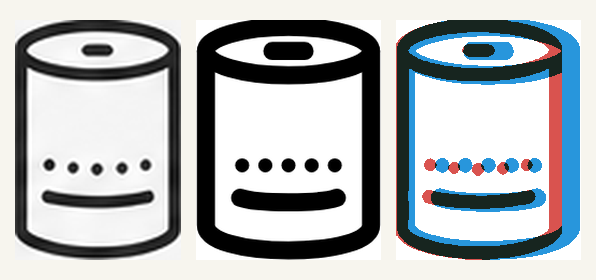
Left: Approved Concept Crop (Devices Card 1) | Center: Compiled Native LVGL A4 Mask | Right: Contour Difference Overlay (Blue: Native, Red: Concept)
| Feature | Canonical Concept | Native LVGL Implementation |
|---|---|---|
| Silhouette | Cylindrical tower with rounded elliptical cap | Full-width top ellipse (rx=8.2, ry=2.4) with center oval mark |
| Negative Space & Vents | Single horizontal row of 5 circular perforations | 5 circular perforations at y=14.8 (x=7.4, 9.7, 12.0, 14.3, 16.6) |
| Intake & Base | Lower horizontal intake slit and curved base arc | Horizontal intake slit at y=18.0; smooth bottom arc at y=23.2 |
Ventilation Fan — 4 Aerodynamic Paddle Blades on Hub Ring (Devices Card 2)
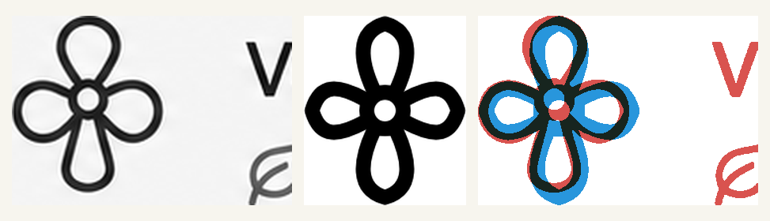
Left: Approved Concept Crop (Devices Card 2) | Center: Compiled Native LVGL A4 Mask | Right: Contour Difference Overlay (Blue: Native, Red: Concept)
| Feature | Canonical Concept | Native LVGL Implementation |
|---|---|---|
| Aspect Ratio | Taller than wide (aspect ratio ~0.84) | 17.6w × 21.0h in 24-grid (aspect ratio 0.838) |
| Hub & Blades | Hollow circular center hub with 4 paddle blades | Circular center hub (r=2.2) with narrow blade roots meeting hub |
| Contour & Joins | Organic aerodynamic curvature expanding outward | Smooth outward curve, rounded tips, continuous strokes |
Desk Lamp — Articulated Task Lamp with Conical Shade (Devices Card 4)
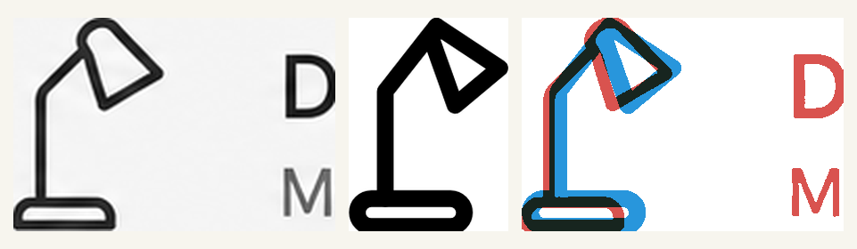
Left: Approved Concept Crop (Devices Card 4) | Center: Compiled Native LVGL A4 Mask | Right: Contour Difference Overlay (Blue: Native, Red: Concept)
| Feature | Canonical Concept | Native LVGL Implementation |
|---|---|---|
| Base & Pedestal | Horizontal base plate at bottom-left | Pedestal base x:3.5..15.0, y:20.5..23.5 with rounded ends |
| Arm Construction | Vertical stem rising on left to angled upper arm | Vertical stem from x=6.5 rising to y=9.0; arm angle to apex (12, 2) |
| Lampshade | Downward-angled conical shade pointing down-right | Conical shade: top slope to (18.8, 6.5), mouth rim to (14, 10.5) |
Humidifier / Droplet — Pure Svelte Teardrop Silhouette (Devices Card 3)
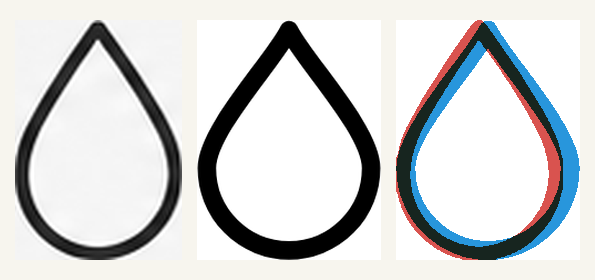
Left: Approved Concept Crop (Devices Card 3) | Center: Compiled Native LVGL A4 Mask | Right: Contour Difference Overlay (Blue: Native, Red: Concept)
| Feature | Canonical Concept | Native LVGL Implementation |
|---|---|---|
| Silhouette | Clean liquid teardrop without inner swirl or breaks | Pointed apex at (12, 1.8) expanding to circular bottom bulb (r=8) |
| Stroke Character | Uniform 2.0px stroke, rounded cap apex | Continuous uniform stroke with stroke-linecap/join round |
| Proportions | Svelte vertical profile (w:16, h:21.4 in 24-grid) | Exact match to concept teardrop ink bounds and curvature |
1. Overview / Dashboard Canonical Topology
Restored 2-row shell (Header y0..56, separate Tabs row y56..100), 416px left column (Hero 416×216, shallow environmental tiles 200×112) and 320px right Devices panel (4 rows h:70, mode width 176px, 44×44 shortcut). Dynamic unit positioning for CO₂ and VOC without "index" suffix.

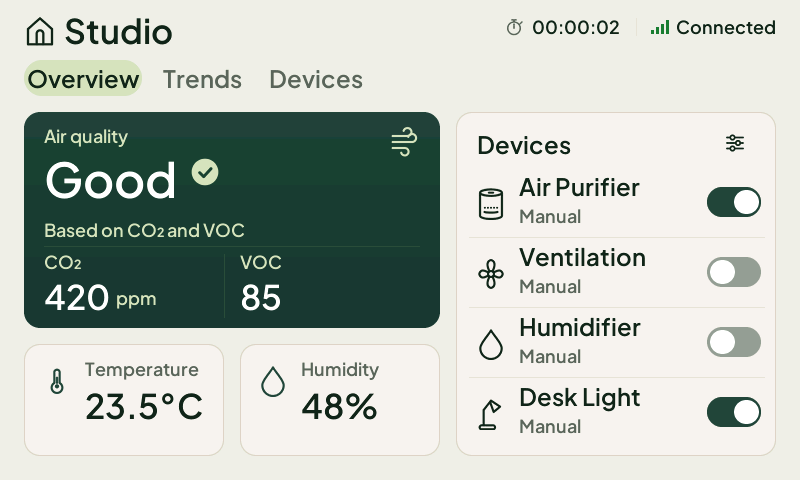
2. Trends Page Full 4-Sensor Hierarchy
184px left rail with 24px sensor icons and prominent readings. 552px Chart card with short titles ("CO₂", "VOC", "Temperature", "Humidity"), distinct 3-column Current/Min/Max stats with vertical separators, and truthful history coverage.
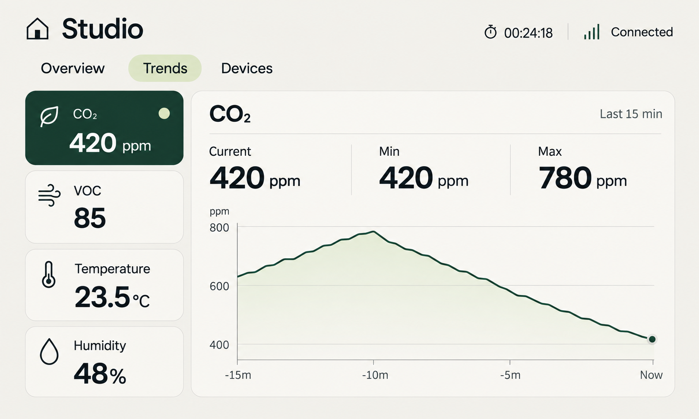
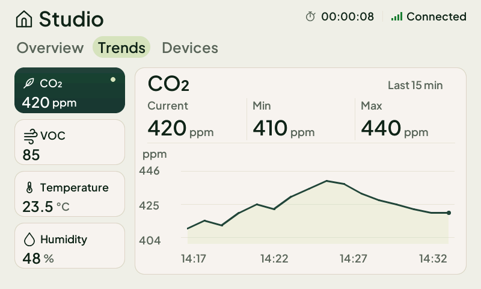
3. Devices Grid 2×2 Compact Grid
2×2 grid of 368×164 cards with 16px gaps. Large 44px redrawn appliance icons, prominent 24px device name, 196px mode lane, 68×44 click area switches, and bottom Settings row (h:67) with 3-track sliders icon and chevron.

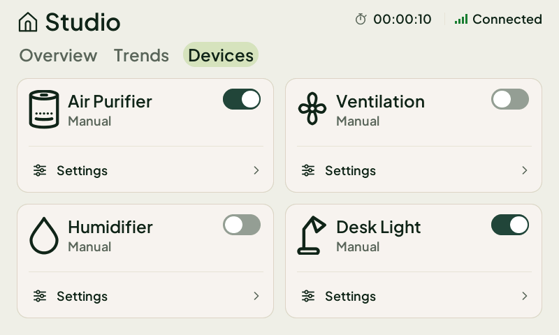
4. Device Settings Modal Outlined Dropdown
Contextual title ("Ventilation Fan settings"), 1px solid #D8D3C8 outlined preset dropdown with chevron, 24px row icons, explicit ON/OFF limits summary ("ON: 1000 OFF: 800 ppm"), and segmented mode and polarity controls.
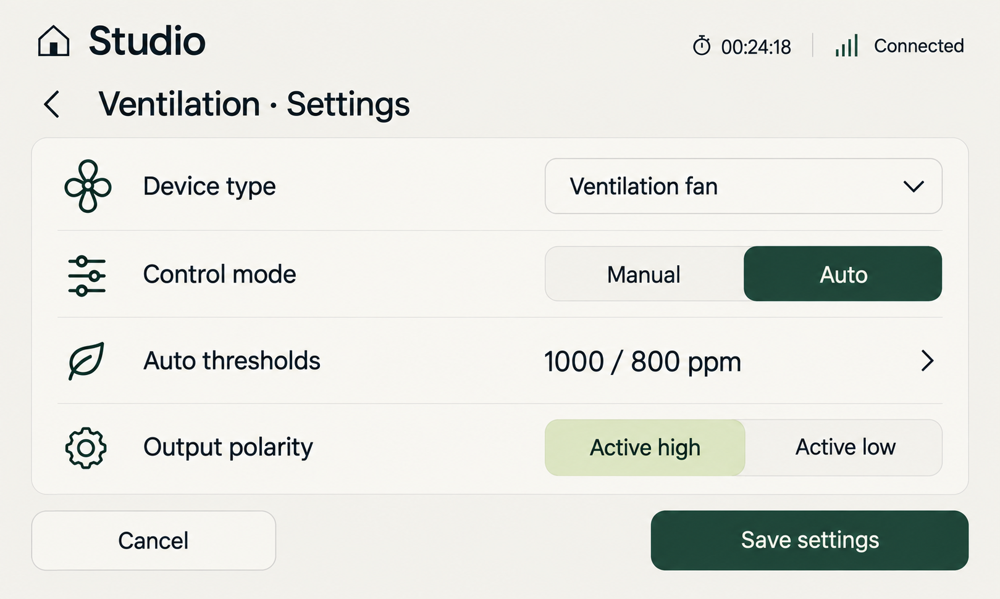
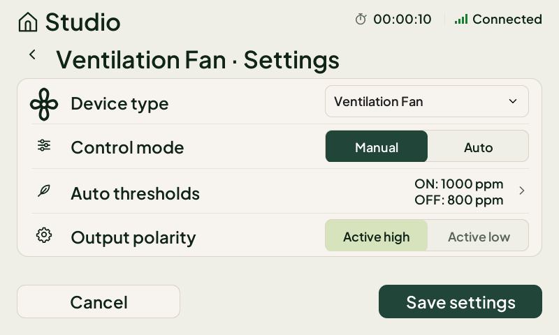
5. Auto Limits Editor — Fan / CO₂ 80px Celadon Strip
80px celadon live sensor strip (y108..188) guaranteeing 0px font 34 clipping. Two symmetric 368×148 limit cards at y200 with large centered 48×48 +/- steppers, 52px reserved helper slot at y356, and 3 equal 48px footer actions at y416.

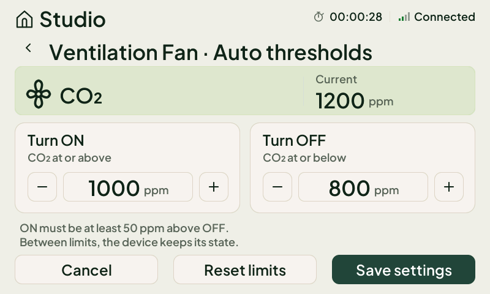
6. Auto Limits Editor — Humidifier / RH Reversed Polarity
Reversed comparison (Turn ON when RH <= 40%, Turn OFF when RH >= 50%). Symmetrical limit cards, clean teardrop icon, unclipped live reading (48 %RH), and inverted hysteresis guidance.

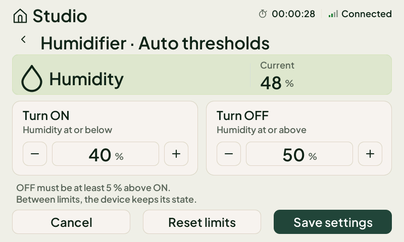
7. Validation Error State — Purifier / VOC Stable Error Outlines
VOC 150/150 invalid collision. Field-only red outline (#D9534F), 2-line actionable repair guidance ("ON threshold must be at least 5 above OFF threshold"), and disabled Save action without shifting footer layout.

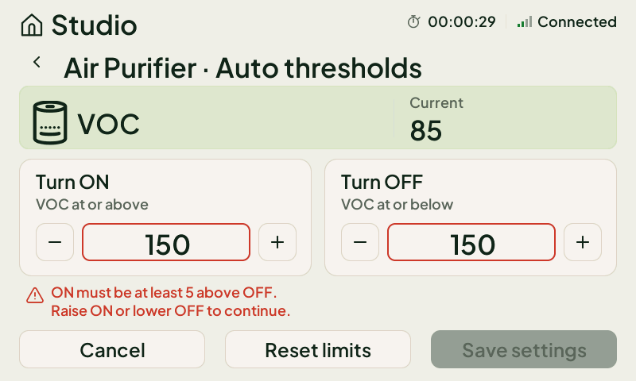
8. Complete Trends Sensor Metrics Gallery
All 4 sensor metrics rendered native in the reconstructed Trends view with short titles, distinct 3-column Current/Min/Max stats, and clean forest curve/area fill.
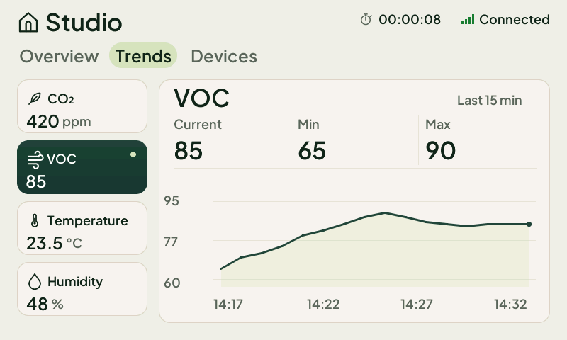
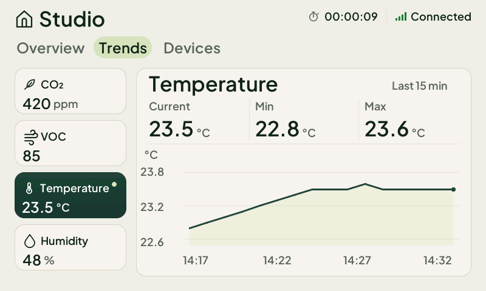
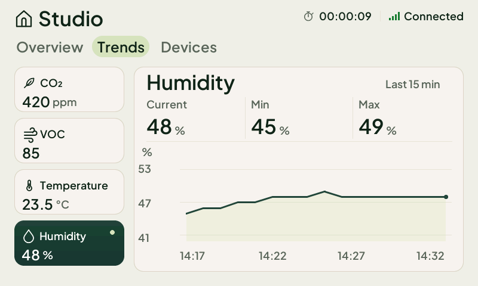
9. Fault, Recovery & Boundary States Gallery
Verified visual states for all boundary conditions: wide numbers, sensor failures, offline link, retry toasts, and auto suspension.
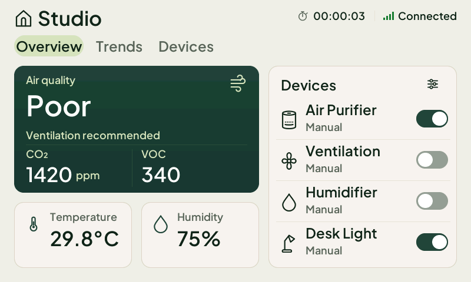
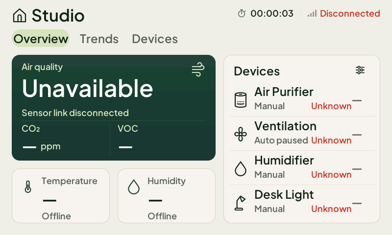
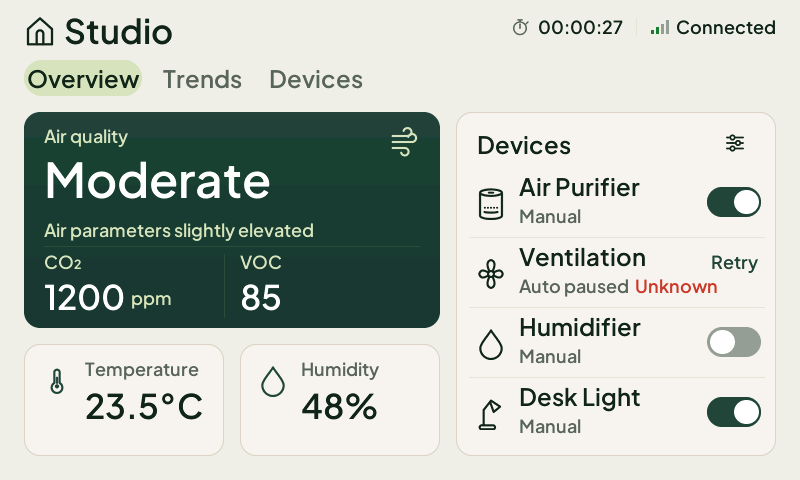
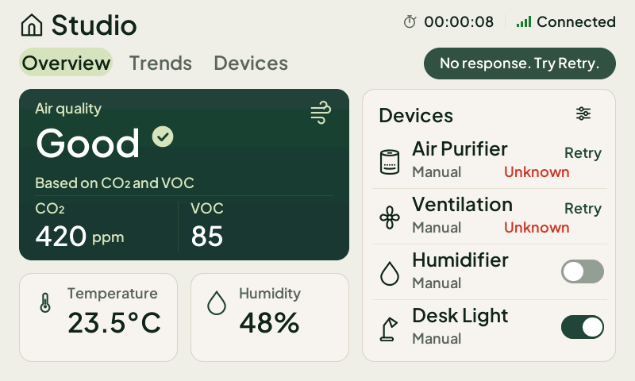